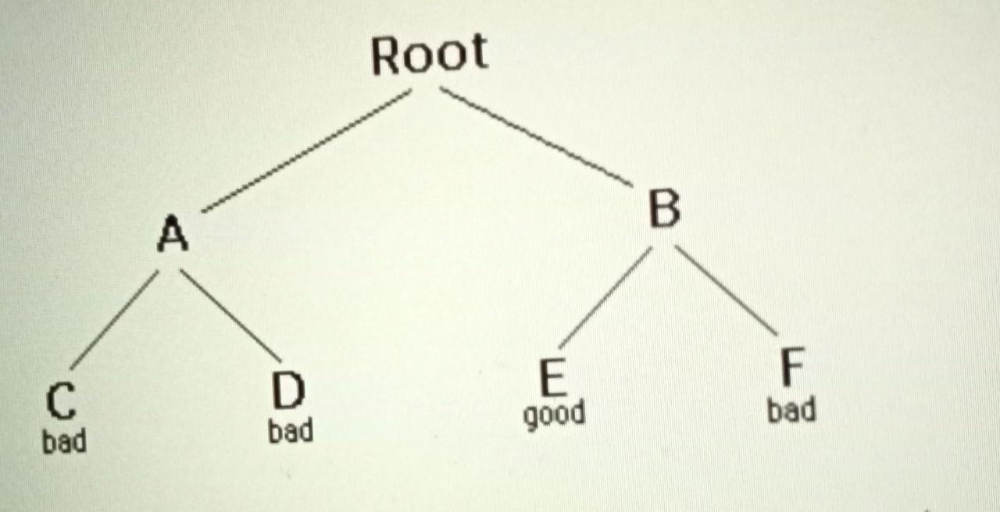

Backtracking is a form of recursion The usual scenario is that you are faced with a number of options. and you must choose one of these.after youmake your choice you will get a net set of options;just what set of optinsyou get depends on what choice you made. This procedure is repeated over and over until ypu reach a final state.if you made a good sequence of choices, your final state is a goal state, if you didn't, it isn't. conceptually you start at the root of a tree, the tree probably has some good leaves, though it may be that the are all or all are bad. you want to get to a good leaf. At each node, beginning with the root , you choose one of its children to move, and you keep this up untill you get to a lea. Suppose you get to a bad tear you can backtrack to continue the search for a good leaf by revoking your most recent choice: and trying out the next option in that set of options if you run out of options,revoke the choice that got you here and try another choice at that node if you end up at the root with no options eft, there are no good leans to be found.
This needs an example

1.Starting at Root, your options are A and B. You choose A.
2 At A, your options are C and D. You choose C
3. C is bad Go back to A
4. At A, you have already tried C, and it failed. Try D
5. Dis bad Go back to A
6. At A, you have no options left to try Go back to Root
7. At Root you have already tried A Try B
8. Ar B. your options are E and F Try E
9. E is good Congratulations
In this example we drew a picture of a tree. The tree is an abstract model of the possible sequences of choices we could make There is also a data structure called a tree but usually we don't have a datastructure to tell us what choices we have. (if we do have an actual tree data structure, backtracking on sealed depth-fire tree searching)
boolean solve(node n){
if n is a leaf node{
if the leaf is a goal node,return value
else return false
}else{
for each child c of n{
if solve(c) succeeds, return true
}
return false
}
}
Notice that the algorithm is expressed as a boolean function. This is essential to understanding the algorithm. If solve(n) is true, that means node n is part of a solution--that is, node n is one of the nodes on a path from the root to some goal node. We say that n is solvable.If solve(n) is false, then there is no path that includes n to any goal node.
Hence, to decide whether any non-leaf node n is solvable (part of a path to a goal node), all you have to do is test whether any child of n is solvable. This is done recursively on each child of n in the above code, this is done by the lines
for each child c of n{
if solve(c) succeeds, return true
}
return false
Eventually the recursion will "bottom" out at a leaf node if the leaf node is a goal node, it is solvable, if the leaf node is not a goal node, it is not solvable. This is our base case, in the above code, this is done by the lines
if n is a leaf node (
if the leaf is a goal node, return true
else return false
The backtracking algorithm is simple but important. You should understand it thoroughly. Another way of stating it is as follows.
Backtracking is a rather typical recursive algorithm, and any recursive algorithm can be rewritten as a stack algorithm. In fact, that is how your recursive algorithms are translated into machine or assembly language.
boolean solve(Node n) {
put node n on the stack;
while the stack is not empty {
if the node at the top of the stack is a leaf (
if it is a goal node, return true
else pop it off the stack
else {
if the node at the top of the stack has untried children
push the next untried child onto the stack
else pop the node off the stack
}
return false
Starting from the root, the only nodes that can be pushed onto the stack are the children of the node currently on the top of the stack, and these are only pushed on one child at a time,hence, the nodes on the stack at all times describe a valid path in the tree Nodes are removed from the stack only when it is known that they have no goal nodes among their descendents. Therefore, if the root node gets removed (making the stack empty), there must have been no goal nodes at all, and no solution to the problem
When the stack algorithm terminates successfully, the nodes on the stack form (in reverse order) a path from the root to a goal node.
Similarly, when the recursive algorithm finds a goal node, the path information is embodied (in reverse order) in the sequence of recursive calls. Thus as the recursion unwinds, the path can be recovered one node at a time, by (for instance) printing the node at the current level, or storing it in an array
Here is the recursive backtracking algorithm, modified slightly to print (in reverse order) the nodes along the successful path
boolean solve(Node n) {
If n is a leaf node {
if the leaf is a goal node {
print n
return true
else return false
} else {
for each child c of n {
if solve(c) succeeds {
print n
return true
}
}
return false
}
}
all of these versions of the backtracking algontrim are pretty smole, but when applied to a real problem they can get pretty cured up with deals Even determining whether the node is a leaf can be complex
for example the path represents a series of moves in a chess endgame problem, me leaves are the checkmate and stalemat solutions
To keep the program clean, therefore, tests like this should be buried in methods in a chess game, for example, you could test whether a node is a leaf by writing agameOver method for you could even call it bisLeaf). This method would encapsulate all the ugly details of figuring out whether any possible moves remain
Notice that the backtracking altorithms require us to keep track, for each node on the current path, which of its children have been tred already (so we don't have to try them again). In the above code we made this took simple, by just saying for each child c of n. In reality, it may be difficult to figure out what the possible children are, and there may be no obvious way to step through them in chess for example, a node can represent one arrangement of pieces on a chessboard, and each child of that node can represent the arrangement after some piece has made a legal move. How do you find these children, and how do you keep track of which ones you've already examined?
The most straightforward way to keep track of which children of the node have been tried is as follows. Upon initial entry to the node (that is, when you first get there from above), make a list of all its children. As you try each child, take it off the list When the list is empty, there are no remaining untried children, and you can return "failure" This is a simple approach, but it may require quite a lot of additional work.
There is an easier way to keep track of which children have been tried, if you can define an orderin on the children, if there is an ordering, and you know which child you just tried, you can determine which child to try next
for example , you might be able to number the children 1 through n,and try them in numerical order. then if you have just tried child k, you know that you have already tried children through k-1, and you have not yet tried children k+1 through n. Or if you are trying to color a map with just four colors, you can always try red first, then yellow, then green, then blue.if child yellows fails, you know to try child green next. if you are searching a maze, you can try choices in the order left,straight,right(or perhaps north, east, south, west).
it isn't always easy to find a simple way to order the children of a node.in the chess game example, you might number your pieces(or perhaps the square of a booard) and try them in numerical order,but in addition each piece may also have several moves, and these must also be ordered
for starters , lets do the simplest possible example of backtracking, which is searching an actual tree. we also use the simplest kind of tree, a binary tree.
a binary tree is a data structurs composed of nodes.one node is designated as the root node. each node can reference(point to) zero,one or two other nodes, which are called its children . the children are referred to as the left child and/or the right child.all nodes are reacheable(by one or more steps)from root nodes, and there are no cycles. for our purpose although this is not apart of the definition of binary tree, we will say that a node might or might not be a goal node,and will contain its Name. the first example in this paper(which we repeat here) shows abinary tree.
here a definition of the binary tree class:
public class BinaryTree {
BinaryTree leftChild = null;
Binary Tree rightChild = null;
boolean isGoalNode = false;
String name;
BinaryTree(String name, Binary Tree left, Binary Tree right, boolean isGoalNode) {
this.name =name;
leftChild =left;
rightChild=right;
this.isGoalNode = isGoalNode;
}
}
we will create a TreeSearch class, and in it we will define a method makeTree() which constructs the above binary tree
static BinaryTree makeTree() {
Binary Tree root, a, b, c, d, e, f;
C=new Binary Tree("C", null, null, false);
d= new BinaryTree("D", null, null, false);
e=new BinaryTree("E", null, null, true);
f=new Binary Tree("F", null, null, false);
a= new Binary Tree("A", c, d, false);
b= new BinaryTree("B", e, f, false);
root = new BinaryTree("Root", a, b, false);
return root;
}
Here's a main program to create a binary tree and try to solve it: public static void main(String args[]) { BinaryTree tree makeTree(); System.out.printin(solvable(tree)); }
And finally, here's the recursive backtracking routine to "solve" the binary tree by finding a goal node.
static boolean solvable(Binary Tree node) {
/*1*/ if (node == null) return false;
/*2*/ if (node.isGoalNode) return true;
/*3*/ if (solvable(node.leftChild)) return true;
/*4*/ if (solvable(node.rightChild)) return true;
/*5*/ return false;
}
here what the numbers line are doing:
1. If we are given a null node, it's not solvable. This statement is so that we can call this method with the children of a node, without first checking whether those children actually exist. 2. If the node we are given is a goal node, return success. 3. See if the left child of node is solvable, and if so, conclude that node is solvable. We will only get to this line if node is non-hull and is not a goal node, says to 4 Do the same thing for the right child. 5. Since neither child of node is solvable, node itself is not solvable. This program runs correctly and produces the unenlightening result true. This time we ask for another node, we have to check if it is null. In the above we put that check as the first thing in solvable. An alternative would be to check first whether each child exists, and recur only if they do Here's that alternative version:
static boolean solvable(BinaryTree node) {
if (node.isGoalNode) return true;
if (node.leftChild != null && solvable(node.leftChild)) return true;
if (node.rightChild != null && solvable(node.rightChild)) return true;
return false;
}
Think the first version is simpler, but the second version is slightly more efficient.
What are the children?
One of the things that simplifies the above binary tree search is that, at each choice point,
you can ignore all the previous choices. Previous choices don't give you any information
about what you should do next; as far as you know, both the left and the right child are
possible solutions. In many problems, however, you may be able to eliminate children
immediately, without recursion.
Consider, for example, the problem of four-coloring a map. It is a theorem of mathematics that
any map on a plane, no matter how convoluted the countries are, can be colored with at most
four colors, so that no two countries that share a border are the same color.
To color a map, you choose a color for the first country, then a color for the second country,
and so on, until all countries are colored.
There are two ways to do this:
Let's apply each of these two methods to the problem of coloring a checkerboard. This should be easily solvable after all, a checkbords needs only to colors.
Used by method 2 to check, at every node, whether there is an adjacent node already colored with the given color.
bolean explore1(int row, int column, int color) {
if (row>=NUM_ROWS)return mapisOK();
map[row][column] = color;
for (int nextColor RED; nextColor <= BLUE; nextColor++){
int[] next nextRowAndColumn(row, column);
if (explore2(next[0], next[1], nextColor)) return true;
}
return false;
}
boolean explore2(int row, int column, int color) {
if (row> NUM_ROWS)return true;
if (okToColor(row, column, color}} {
map[row][column] = color,
for (int nextColor RED; nextColor < BLUE; nextColor) {
int[] next nextRowAndColumn(row, column);
if (explore2(next[0], next[1], nextColor)) return true;
}
}
return false
}
Those appear pretty similar, and you might think they are equally good. However, the timing information suggests otherwise
| 2 by 3 map | 3 by 3 map | 3 by 4 map | |
| method 1: | 60ms. | 940ms. | 60530ms.(1 minute> |
| method 2: | 0ms. | 0ms. | 0ms. |
The zeros in the above table indicate times too short to measure (less than 1 millisecond). Why this huge difference? Either of these methods could have exponential growth. Eliminating a node automatically eliminates all of its descendents, and this will often prevent exponential growth. Conversely, by waiting to check until a leaf node is reached, exponential growth is practically guaranteed. If there is any way to eliminate children (reduce the set of choices), do so!
Often our first try at a program doesn't work, and we need to debug it. Debuggers are helpful,but sometimes we need to fall back on inserting print statements. There are some simple tricks to making effective use of print statements. These tricks can be applied to any program, but are especially useful when you are trying to debug recursive routines.
Often, the best debugging technique is to print every method call and return (or at least the most important ones). You probably want to print, for each method, what parameters it came in with, and what value it leaves with. However, if you just print a long list of these, it's hard to matcup method exits with their corresponding entries indenting to show the level of nesting can help.
Don't clutter up your actual code more than you must Also, remember that code inserted for debugging purposes can itself contain bugs, or (in the worst case) can affect the results, so be very careful with it
Here's our debugging code. For this trivial program, there's almost more debugging code than actual code, but in larger programs the proportions will be better.
static String indent = "";
static String name(Binary Tree node) {
if (node == null) return null;
else return node.name;
}
static void enter (BinaryTree node) {
System out printin(lindient "Entering solvable(" + name(node + ")");
indent = indent+"|";
}
static boolean yes(Binary Tree node) {
System out printin(lindient "Entering solvable(" + name(node + ")");
indent = indent+"|";
}
static boolean yes(BinaryTree node) {
indent =indent.substring(3);
System.out.println(indent + "solvable(" + name(node)+") returns true");
return true;
}
static boolean no(BinaryTree node) {
indent indent.substring(3);
System.out.println(indent + "solvable("+ name(node) + ") returns false";
return false;
return false;
to use the code , we modify solvable as follows:
static boolean solvable (Binary Tree node) {
enter(node);
if (node == null) return no(node);
if (node.isGoalNode) return yes(node);
if (solvable (node.leftChild)) return yes(node); if (solvable(node.rightChild)) return yes(node);
return no(node);
}
And we get these results:
Entering solvable(Root) |Entering solvable (A) || Entering solvable(C) || Entering solvable(null) ||| solvable(null) returns false ||| Entering solvable(null) || solvable(null) returns false || solvable(C) returns false ||| solvable(null) returns false || solvable(C) returns false Entering solvable(D) || Entering solvable(null) | solvable(null) returns false |||Entering solvable(null) ||| solvable(null) returns false ||solvable(D) returns false ||solvable(A) returns false ||Entering solvable(B) || Entering solvable(E) || solvable(E) returns true solvable(B) returns true solvable(Root) returns true trueWriting debugging statements is programming, too. Often it's as much work to debug the debugging statements as it is to debug the actual program. Once your program is working, why throw this code away?
Obviously, you don't want to print out all this debugging information from a program you are ready to submit (or to turn over to your manager). You could comment out your debugging calls, but that can be a lot of work. What's more, in the above example you would have to replace every return(yes (node)) with return(true), and every return(no(node)) with return false. With all these changes, you might introduce new bugs into your program.
The simple solution is to make your debugging statements conditional. For example,
static final boolean debugging = false;
static void enter(BinaryTree node) {
if (debugging) {
System.out.println(indent + "Entering solvable("+name(node) + ")");
indent indent + " ";
}
}
static boolean yes(Binary Tree node) {
if (debugging) {
indent= Indent.substring(3);
System.out.println(indent + "solvable("+name(node)+") returns true");
}
return true;
static boolean no(binary tree node){
if (debugging) {
indent = indent.substring(3);
System.out.println(indent + "solvable("+name(node) + ") returns false");
return false;
}
In industry, actual programs often have multiple flags to control different aspects of debugging. Don't worry too much about making your code larger; modern compilers will notice that since the variable debugging is final, it can never be true, and the controlled code will be discarded.
Trick #4: Create an Exception.If an Exception is thrown, you can get information about just where it happened by sending it the message printStackTrace(PrintStream). Since an Exception is an object like any other, you can create and throw your own Exceptions. However, Java programmers don't always realize that you can create an Exception without throwing it. For example, the following code.
will print out a message something like this, and the program will then continue normally. That is, the above code just acts like a print statement.
java.lang.Exception: Checkpoint Charlie:
at TreeSearch.solvable (TreeSearch.java:53)
at TreeSearch.solvable (TreeSearch.java:57)
at TreeSearch.main(TreeSearch.java:72)
at SHELL38.run(_SHELL38.java:16)
at bluej.runtime.ExecServer.suspendExecution (Unknown Source)
I call the following puzzle "Cindy's puzzle" for historical reasons. You have some number n of black marbles and the same number of white marbles, and you have a playing board which consists simply of a line of 2n+1 spaces to put the marbles in. Start with the black marbles all at one end (say , the left), the white marbles all at the other end, and a free space in between.
|
|
|
|
|
|
|
|
For example, you could make the following sequence of moves.
| starting positions: |  |
|
|
|
|
| black moves ahead: | |
|
|
|
|
| white jumps: | |
|
|
|
|
| black moves ahead: | |
|
|
|
|
| black jumps | |
|
|
|
|
| white moves ahead | |
|
|
|
The backtracking method is named solvable and returns a boolean. In solvable we shall need to check
whether we are at a leaf, which in this case means a position from which no further moves are possible.
This isn't so easy.
Now to the program. The main program will initialize the board, and call a recursive backtracking routine
to attempt to solve the puzzle. The backtracking routine will either succeed and print out a winning path,
or it will fail, and the main program will have to print out the bad news.
The backtracking method is named solvable and returns a boolean in solvable we shall need to check
whether we are at a leaf, which in this case means a position from which no further moves are possible.
This isn't so easy.
Each possible move will result in a new board position, and these new board positions are the children of
the current board position. Hence to find the children of a node (that is, of a board position), we need
only find the possible moves from that node. Remember that it is also highly desirable to find an ordering
on these possible moves.
Here it is time to stop and take thought. To make progress, we must analyze the game to some extent. Probably
a number of approaches would work, and what follows is based on the way I worked it out. If you were to
program this puzzle, you might find a different but equally valid approach.
First, notice that if a marble has a move, that move is unique: if it can move ahead one square, then it cannot
jump. If it can jump, it cannot move ahead one square. This suggests that, to find the possible moves, we
might assign numbers to the marbles, and check each marble in turn. When we have looked at all the marbles,
we have looked at all the possible moves. This would require having a table to keep track of where each
marble is, or else somehow "marking" each marble with its number and searching the board each time to
find the marble we want. Neither alternative is very attractive.
Next, notice that for a given board position, each marble occupies a unique space. Hence, instead
of talking about moving a particular marble, we can talk about moving the marble in a particular space.
If a move is possible from a given space, then that must be the only move possible from that space,
because if the marble in that space has a move, it is unique. There is a slight complication because
not every space contains a marble, but at least the spaces (unlike the marbles) stay in one place.
Now we have a simpler ordering of moves to use in our program. Just check, in order, the 2n+1 spaces of the
board. For each space, either zero or one moves is possible. With this understanding, we can write a boolean
method canMove(int[] board, int position) which determines whether a move is possible from the given
position:
1.If the position is empty, no move is possible 2. if the position contains a black marble, the method checks for a move or jump to the right, 3.If the position contains a white marble, the method checks for a move or jump to the left.
We write another method int[] makeMove (int[] oldBoard, int position) will take a board and a position, make a move from that position, and return as its value a new board. (We could write this somewhat more efficiently by changing the old board, rather than creating a new one, but here wo are more concerned with simplicity.) In technical jargon, makeMove is "applicative" rather than "mutative". Along with canMove and makeMove, we are using methods puzzleSolved and printBoard with meanings that should be obvious.
boolean solvable(int[] board) (
if (puzzleSolved(board)) {
for (int position = 0;
position < BOARD_SIZE;position++) {
if (canMove(board, position)) {
int[] newBoard = makeMove(board, position);
if (solvable(newBoard)) {
printBoard(newBoard);
return true;
}
}
}
return false;
}
Along with canMove and makeMove, we are using methods puzzleSolved and printBoard with meanings that should
be obvious.
Here is some output from the program.
WHITENotice that the solution is given in reverse order: BLACK starts out on the left and WHITE on the right, as in the last line. I've added line numbers to the actual output in order to emphasize this point. Backtracking always produces its resuits (sequence of choices) in reverse order; it is up to you, the programmer, to reverse the results again to get them in the correct order.